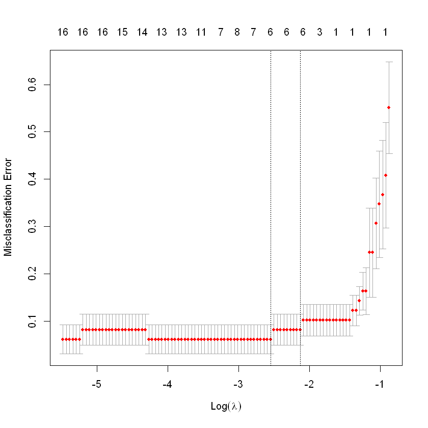

data {
int<lower=0> N;
int<lower=0> K;
matrix[N, K] X;
int<lower=0,upper=1> y[N];
}
parameters {
vector[K] beta;
}
model {
beta ~ normal(0, 1);
y ~ bernoulli_logit(X * beta);
}Predicting League of Legends game outcomes: A comparison of Bayesian and Non-Bayesian methods
Intro
League of Legends, a Multiplayer-Online-Battle-Arena (MOBA) pits five players, controlling champions, to destroy the enemies team’s nexus. Due to the nuances of the game, as well as unique and independent factors, no two games are unique. These factors and nuances include but not limited to: Champion selection, item build paths, rune choices and much more.
For our analysis, factors that are not strictly dependent on player skill were ignored. This choice is due to the fact that choices as listed above require a different skillset that is not improved by practice in the traditional matter. Our analysis focuses on gameplay aspects and markers that a player can tangibly see during and after the game. By determining the most critical factors using LASSO (Least Absolute Shrinkage and Selection Operator) and measuring the BIC (Bayesian Information Criterion) to compare models, we seek to answer which model predicts the outcome of a game more accurately.
In McElreath (2016;2015;2018;), chapter 6 discusses the use of different criterion for model comparison, as well as discusses LASSO/Ridge. McElreath argues that LASSO/Ridge can be viewed as Bayesian/Non-Bayesian, depending on the perspective. Since it uses gaussian priors but it does not compute a posterior distribution, there is an argument for both. In our case, we are treating it as a non-Bayesian model to contrast against our STAN model.
For an in-depth analysis of the game as well as core mechanics, Hitar-Garcia, Moran-Fernandez, and Bolon-Canedo (2023) explains as well as goes in depth into their own prediction model. In their findings, they created new features from the result of given features in the data, and used player win rates in their calculations. Their goal is to predict a win before the game starts while our approach is to predict the outcome given data from the game. Both findings used different approaches for the same outcome, given different circumstances. Since League of Legends, is still relatively new, not much has been researched regarding key factors, as mentioned in Hitar-Garcia, Moran-Fernandez, and Bolon-Canedo (2023). They describe two groups of approaches, with our findings taking account of in-game information, while their findings did not use it.
Analysis
The data was collected by a willing third-party who allowed their games to be used for this analysis. The data is a collection of 70 ranked solo/duo games played during split 1 of the 2024 season. These 70 games were played in the mid or top role, two of five possible roles in the game. For this analysis, the goals and expectations of the top and mid role are similar enough so that we can ignore any differences between them and consider them the same.
We model the binary outcome ( y_i {0, 1} ) (win/loss) using logistic regression:
\[\begin{align*} y_i &\sim \text{Bernoulli}(\pi_i), \quad i = 1, \dots, N \\ \beta_j &\sim \mathcal{N}(0, \sigma^2) \quad \text{for all } j \in \{1, \dots, K\} \\ \text{logit}(\pi_i) &= \mathbf{x}_i^\top \boldsymbol{\beta} \end{align*}\]
For this logistic regression task predicting win/loss outcomes, we use priors to guard against overfitting and to stabilize estimation in the presence of multicollinearity or weak signals.
🔹 Choice of Prior: β ~ Normal(0, 1)
We specify a weakly informative normal prior:
beta ~ normal(0, 1);
The choice of the standard normal is because we believe the large amount of data will affect the posterior more than the prior itself. I am not an expert in the field yet to choose an informative prior, so letting the data and it’s likelihood to determine the posterior is the safer choice.
y ~ bernoulli_logit(X * beta)
Bernoulli_logit was used since we are performing logistic regression on a binary outcome. It is the most naturally-fitting distribution for this project.
The full STAN code is available in the appendix.
We split the data 70/30 for training and testing respectively, to use for accuracy testing done later.
Before running the STAN code, we use LASSO to perform feature selection. LASSO selects features that contribute significantly by minimizing penalties brought by overfitting, and only using the most significant features. By performing some EDA to remove unnecessary features, then performing LASSO, we can isolate the data before using it in our prediction models.
Data clean up as well as LASSO can be found in the appendix.
After performing LASSO, the optimal value for \(\lambda\) is found by plotting the cross validation generalized linear model object and determining the \(\lambda\) with the lowest misclassification error. Both the \(\lambda_{min}\) and \(\lambda_{1se}\) both determine six coefficients are best for our data and specification.

The six selected features were the following and a brief description along with them (follows the assumption Hitar-Garcia, Moran-Fernandez, and Bolon-Canedo (2023) is read previously for further understanding):
- Selected Features
- Assists - When the player participates in the death of an enemy by dealing damage or aiding their ally who dealt the final blow
- Inhibitor takedowns - When the player aids in the destruction of an enemy inhibitor
- Kills - When the player deals the final blow of an enemy’s death
- Largest killing spree - Largest number of consecutive kills without a player’s death occuring
- Turret takedowns - Same as Inhibitor takedowns but for turrets
- Turrets lost - The number of turrets the player’s team has lost due to the enemy
And these features make sense in the context of winning a game. Kills and assist are useful since when the enemy is dead, that gives an advantage for the player to do objectives or cash in their gold, becoming stronger. Largest killing spree is more interesting since it means the most kills without dying, and the player can impact the map if they are not dead. We are not considering a professional play environment, where factors such as kills and assists matter less. Professional players are able to create much larger advantages from fewer kills. In the ranked solo/duo games being analyzed here, kills and assists drive players to perform actions that create an advantage more so than professional play.
As for turrets and inhibitor takedowns, the game cannot end without them being destroyed so that is why they are favoured over non-mandatory objectives like Rift Heralds or Elemental Drakes, which are creatures found between lanes that can aid the team who kills them an advantage.
Turrets lost conversely is low when the player’s team is performing well enough that the enemy has no opportunity to damage and destroy them, signifying the player’s team having the advantage.
As mentioned earlier, we used each model’s BIC for comparison. Since overfitting is a significant issue, penalizing more parameters being used limits the error overfitting would bring. Since both models are performing classification, it is simple to compare each number to one another and determine the better performing model.
After computing predicted probabilties for our test data and their log-likelihoods, we compute the following BIC’s for the LASSO and STAN models:
(Due to inflation from MCMC samples, the use of colMeans() is employed and the use of the posterior mean is present.)
- BIC of the LASSO logistic regression model: 25.81679
- Corrected BIC (using posterior mean): 22.98501
Comparing the BIC’s, the STAN model achieves a lower value, yet still close to the LASSO model. So even though the STAN model has a lower BIC than the LASSO model, the LASSO model requires no prior to be chosen nor a STAN model to be created and ran. LASSO is also much faster to compute and is very efficient. Efficiency would matter a lot more if we had more data. This report only used 70 data points but in a game such as League of Legends, where millions of games are played weekly, using STAN will be difficult due to the resources it will consume. Another limitation of the data is that it is representative of the one player who’s data belongs to. It is not representative of the player base in it’s entirity, nor is it a fair sample of them. For future studies, compiling many players with perhaps different playstyles but in the same role, can determine more nuanced features that are significant to their success.
Stan Model
Data cleaning
# Select numeric columns that sum to 0
library(tidyverse)
droppedColumns <- c()
for (i in 1:length(colnames(select_if(data, is.numeric)))){
column <- toString(colnames(select_if(data, is.numeric))[i])
if (sum(data[column]) == 0){
droppedColumns <- c(droppedColumns, column)
}
}
data <- data %>% select(-c(puuid, summonerName, riotIdGameName, riotIdTagline, summonerId, objectivesStolen, profileIcon, summoner1Id, nexusLost, nexusTakedowns))
data <- data[, !colnames(data) %in% droppedColumns]
# Convert 'win' to numeric (0/1)
data$win <- as.numeric(data$win)
# Remove character/factor columns
data_numeric <- data %>% select(where(is.numeric))
# Remove rows with NA
data_numeric <- na.omit(data_numeric)
# Split into predictors and response
X <- data_numeric %>% select(-win) %>% as.matrix()
y <- data_numeric$winData splitting
set.seed(123)
train_index <- createDataPartition(y, p = 0.7, list = FALSE)
X_train <- X[train_index, ]
y_train <- y[train_index]
X_test <- X[-train_index, ]
y_test <- y[-train_index]BIC calculation for LASSO
n_test <- nrow(X_test_scaled)
k <- sum(lasso_coef[-1, 1] != 0)
pred_probs <- predict(cvfit, newx = X_test_scaled, s = "lambda.min", type = "response")
pred_probs <- pmin(pmax(pred_probs, 1e-15), 1 - 1e-15)
log_likelihood <- sum(y_test * log(pred_probs) + (1 - y_test) * log(1 - pred_probs))
bic <- -2 * log_likelihood + k * log(n_test)
cat("BIC of the LASSO logistic regression model:", bic, "\n")BIC calculation for STAN
beta_mean <- colMeans(beta_post)
mean_pred_probs <- plogis(X_test_scaled %*% beta_mean)
mean_pred_probs <- pmin(pmax(mean_pred_probs, 1e-15), 1 - 1e-15)
# Compute log-likelihood
log_lik <- sum(ifelse(y_test == 1, log(mean_pred_probs), log(1 - mean_pred_probs)))
# Compute BIC
k <- length(beta_mean) # number of coefficients
n <- length(y_test)
bic <- -2 * log_lik + k * log(n)
cat("Correct BIC (using posterior mean):", bic, "\n")References
Hitar-Garcia, Juan A., Laura Moran-Fernandez, and Veronica Bolon-Canedo. 2023. “Machine Learning Methods for Predicting League of Legends Game Outcome.” IEEE Transactions on Games 15 (2): 171–81.
McElreath, Richard. 2016;2015;2018; Statistical Rethinking: A Bayesian Course with Examples in r and Stan. 1st;1st;1st; ed. Vol. 122. Boca Raton: CRC Press.